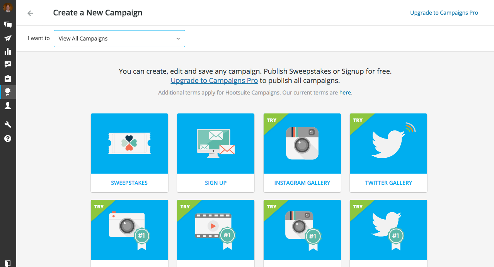
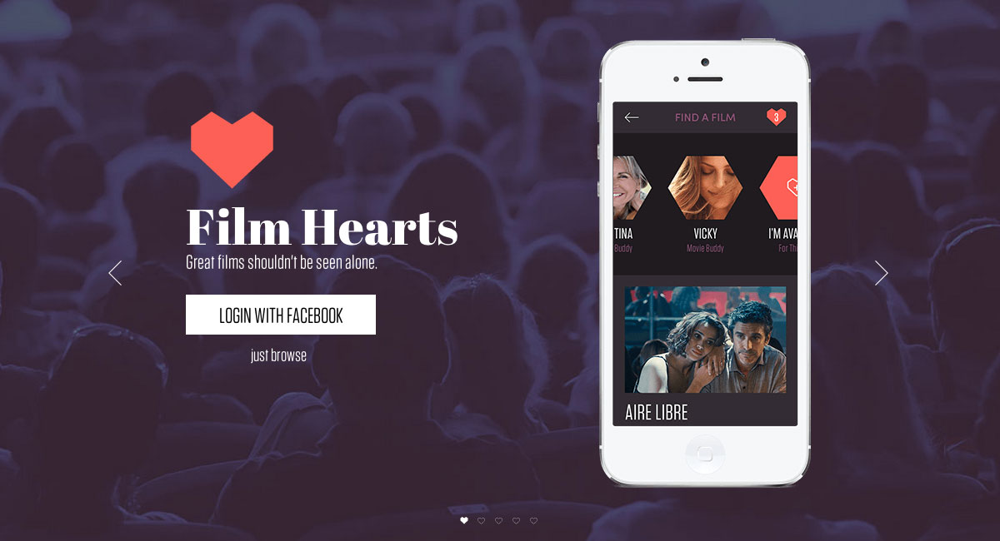
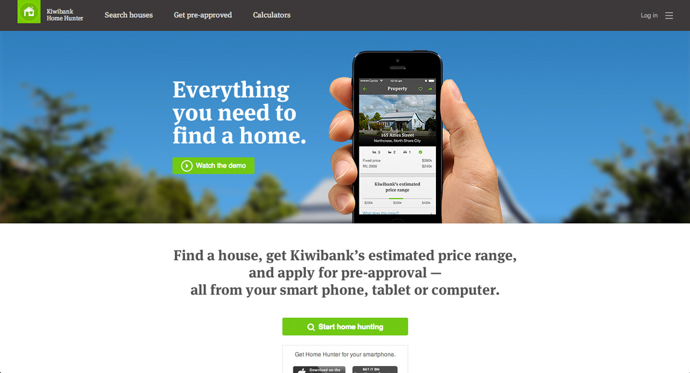

Experience
Starboard Maritime Intelligence • Senior Software Engineer 2020 - 2024
Javascript (React, Redux, Leaflet), Golang, Postgres, GraphQL, Redis, CSS

- Really enjoyable and challenging problems to solve with so much data (1M+ vessels and 5,000 new positions received per second!).
- Played a key role developing many critical features including vessel tags and notes, alerting, filtering, user activity feed, biosecurity risks, organisation groups, authentication and much more.
- Spearheaded many important architectural decisions from frontend structure to API and database schema design.
- Provided guidance to junior and intermediate engineers, and worked with a great remote team.
Merge Freeze • Founder / Developer 2017 - 2022
Ruby on Rails, Postgres, Redis, Javascript, CSS

- Developed a Github integration to prevent teams from merging and deploying code when they shouldn't be.
- Interesting working with both the Github and Slack APIs, and selling in the Github Marketplace.
- Mostly a side project with a brief period of time working on it full time. Sold the business in 2022.
Optimal Workshop • Senior Software Engineer 2017 - 2020
Ruby on Rails, MySQL, Redis, Javascript (React, Redux), CSS

- Lead the development of the second version of Optimal Workshop's note taking tool, “Reframer”. This involved introducing React to the dev team and holding tutorial workshops.
- Founded and ran the “frontend champions” working group and started the company's first component library.
- Introduced an adapted version of the “Shape up” method of working as an alternative to agile.
- Was part of a three person leadership team for the Development Faculty, primarily responsible for faculty processes.
- Mentored two members of the dev team through the Development Faculty's mentor programme.
Hootsuite • Senior Software Developer 2014 - 2017
PHP (Laravel), Scala, Javascript (React, jQuery), MySQL, Redis, CSS
-
Took a lead role in developing the Hootsuite Campaigns Freemium product, including:
- Designing the frontend architecture and developing coding standards.
- Refactoring the backend structure (PHP) to accommodate free, pro and enterprise users.
- Introduced React into the Campaigns team's frontend toolkit.
- Investigation and strategy for developing new features in the Hootsuite Publisher Services team (architecture was mainly a collection of Scala microservices). Large scale product (over 15 million users).
- Resident expert on Hootsuite Campaigns' Instagram and Twitter scraping service (built in Python).
- Mentoring junior members of the team.
Pound & Grain • Software Developer July - November 2014
PHP (Laravel), MySQL, CSS
- Developed Film Hearts, a dating app for film festival goers.
- Created a boilerplate build script and CSS standards for the dev team.
- Developed a responsive website for Presenting Our Vision, a charity set up to get disadvantaged youths into the film industry.
- Developed a responsive website for the Hudson's Restaurant and Bar franchise.
Springload • Web Developer 2011 - 2014
PHP, MySQL, Javascript, CSS
- Wrote backend code for numerous challenging projects using a flexible PHP based framework developed in-house.
- Worked on responsive websites, web apps, mobile apps and JSON based web services.
ANZ National Bank • Frontend Developer October 2010 - March 2011 (fixed term)
Javascript, CSS
- Provided guidance to the design team regarding important user experience and interface decisions.
- Produced white-label CSS for two large Internet banking applications.
- Created a large number of Javascript driven prototypes to help the UX team test a range of different user journeys.
Springload • Frontend Developer 2008 - 2010
Javascript, CSS, PHP, MySQL
- Refined my knowledge of front and backend web development. Lead the frontend development on many design-centric projects. A large number of these won design awards.
- Built Javascript tools and calculators.
- Got into Linux Apache server administration, and wrote a bunch of shell scripts that sped up day-to-day tasks.
- Made a large contribution to the Springload blog, with tips, tricks and re-usable code for public consumption.
Education
Victoria University of Wellington • Graduate Diploma in Science (Partially completed)
2010 - 2013 (part-time)
Major: Computer Science
Natcoll School of Design • Diploma of Web Development
2007 - 2008
Victoria University of Wellington • Bachelor of Commerce and Administration
2001 - 2004
Major: Marketing, Management